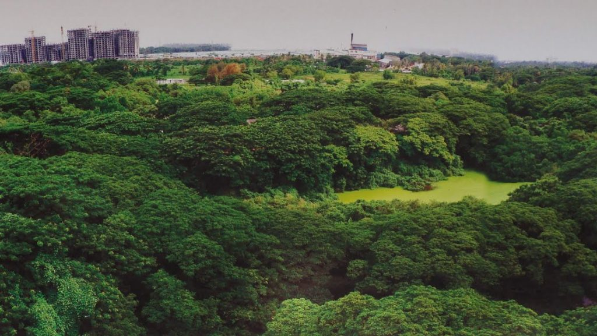
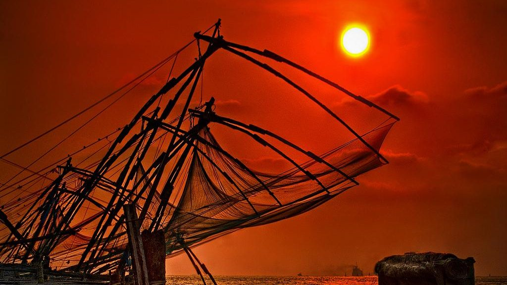
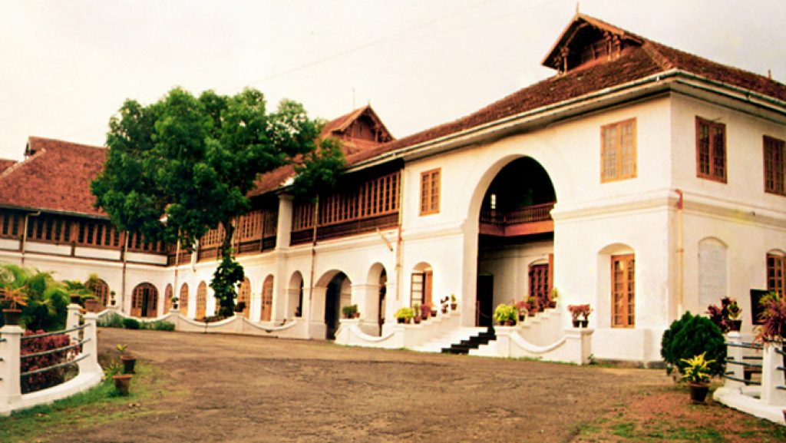
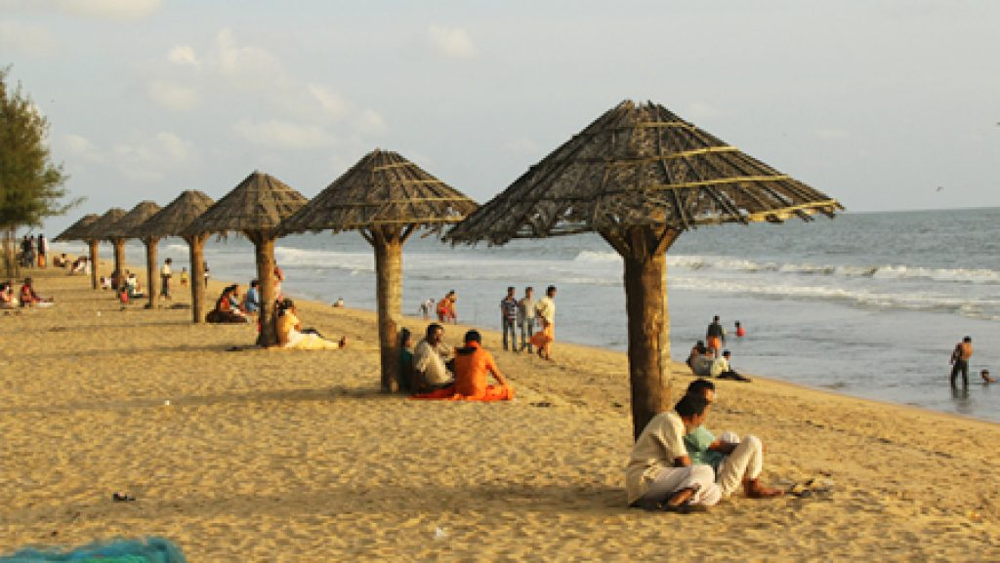

TOP DESTINATIONS
-

Mangalavanam
Mangalavanam Bird Sanctuary is a bird sanctuary in the city of Palakkad district of Kerala state in India.It is located in the heart of Kochi city and has an area of 0.0274 sq km. A large number of migratory birds visit this place. Spiders and bats are the main attractions here. The Mangalavanam Bird Sanctuary which was established in 2004 is the smallest protected area under the state forest department. It is the only bird sanctuary in Kerala which is located in Mangrove forests. The word Mangal means mangroves in Portuguese. A survey conducted in May 2006 found that there are 194 birds in 32 species. The number of bird species recorded so far from this area is 72. In addition, 17 species of butterflies are recorded here. There are 51 different types of spiders
-

Fort Kochi
Fort Kochi, the western part of the Kochi city of Ernakulam district in Kerala. It is about 12 km away from Ernakulam Town. Fort Kochi has played an important role in the history of Kerala. Fort Kochi also has several attractions like the Santa Cruz Basilica. Fort Kochi also houses many historical monuments such as the St. Francis Church, the first church of Vasco da Gama, the Dutch Seminary, the China Vela and many others. The Indian Navy’s ship, Dronacharya, is located in Fort Kochi. The Mattancherry Palace is close by. Fort Kochi was the first European township in Kerala. The Fort Kochi carnival celebrates New Year’s Eve every year. Thousands of people come to visit this carnival. The car rides and other festive events are also part of the carnival
-

Bolgotty Palace
This is the oldest palace built by the Dutch outside the Kingdom of Holland. The palace was built by a Dutch merchant in 1744. Later, it was renovated with a magnificent lawn and a number of reforms. The palace served as the official residence of Dutch Governor. In 1909, the palace was purchased by the King of Cochin for the English East India Company. The palace was the residence of British governors during the British rule. When India gained independence in 1947, the palace became part of the Bharatiya dynasty. KTDC This palace took over in 1976. Later it started to be used as a hotel. The magnificent palace is also home for the shooting of Malayalam films. In 2001, KTDC renovated this palace with a cost of Rs 5.1 crore
-

Hill Palace
Hill Palace, built in 1865, is the largest archaeological museum in Kerala and the administrative center of Cochin. The palace consists of 49 buildings in the local style of 54 acres and includes the Hill Palace Archaeological Museum, Heritage Museum, Deer Park, Prehistoric Park and Children’s Park. There are many medicinal plants around the palace. The Museum Hill Palace is now open to the public for days on Mondays. The Hill Palace is located at a distance of 14 km from Kochi. Hill Palace was built in 1865 by the Maharaja Of Cochin using his personal wealth. The palace was handed over to the Government of Kerala by the Cochin Royal Family in 1980. The palace was taken over by the Archaeological Department of the Hill Palace in the year 1986. The famous Malayalam movie depicted various movies including Manichitrathazhu at the palace. The museum was opened in 1991. At present, there are 11 galleries. The museum has a collection of ancient artifacts, sculptures, coins, coins and materials belonging to Cochin Maharaja and his royal family.
-

Cherai Beach
Around two dozen kilometers from the industrial district of Ernakulam and to the side of the Vypeen Island lies every swimmer’s paradise, Cherai Beach. It is a favorite haunt of those looking for a relaxing swim with the backdrop of coconut groves being the added incentive. It provides a wonderful view of the famous Chinese Fishing Nets or Cheena Vala well. The nearby shacks provide you with fresh cuisine that fills you up perfectly after a delightful swim. The seashells found here are unique and one often runs into dolphins in this area. It is the ideal blend of both the backwaters and the sea. The area itself has seen many new resorts and hotels crop up, which have facilitated the increase in tourist activity. Today it is amongst the most visited beaches in Kerala with a view that make it near impossible to tear yourself away once you get there.